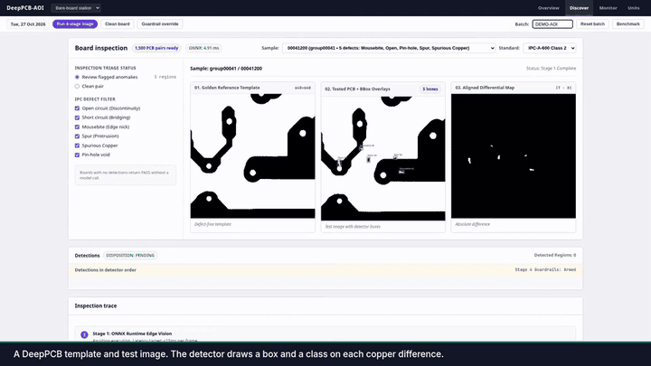
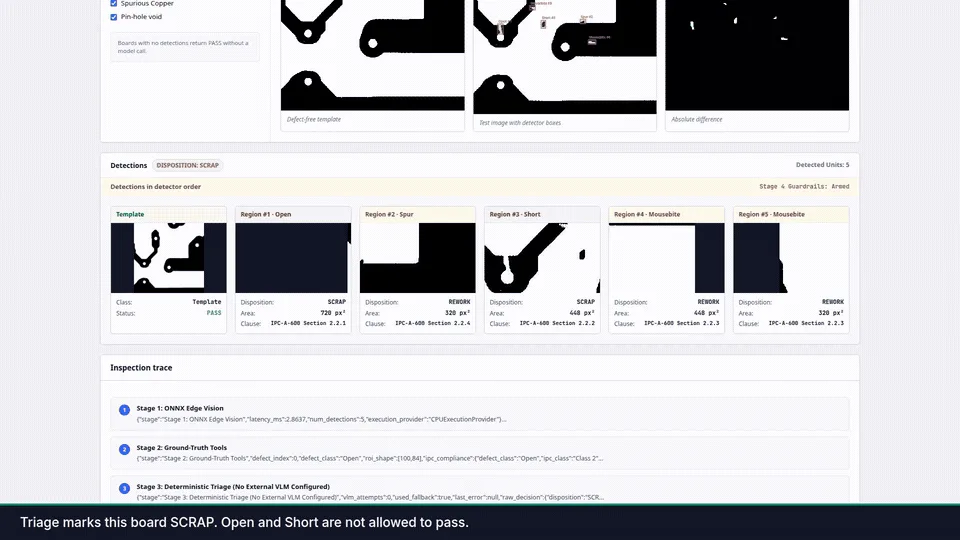

Personal project · 2026
DeepPCB-AOI
Bare-board PCB inspection that finds copper defects and returns an auditable pass, rework or scrap decision.
RepoDemo video coming

The problem
Bare printed circuit boards are inspected by comparing each board with a known-good template. Finding differences is only half of the job. The line also needs a decision (pass, rework or scrap) that follows written limits, can be audited later, and never lets a fatal defect such as an open or a short through, even if an AI component in the loop disagrees.
What it does
- Takes a template image and a test image (640×640, from the public DeepPCB dataset) and finds the regions where the copper differs.
- Labels each region as one of six classes: open, short, mousebite, spur, spurious copper or pin-hole.
- Checks each region against Class 2 / Class 3 area limits (a pixel stand-in for IPC-A-600) and keeps a per-batch count of each class in SQLite.
- Returns PASS, REWORK or SCRAP with a severity, and raises a halt flag when the same defect keeps repeating in a batch.
- Ships as a FastAPI service with a one-page web console (inspect, triage, upload, benchmark and batch telemetry routes).
How it works
- 1 · DetectAn ONNX graph subtracts test from template, takes the absolute value and box-averages it into a 160×160 score map. Connected components become boxes; the class comes from polarity (missing vs extra copper) plus area, aspect ratio and fill. NMS removes overlaps.
core/vision - 2 · Fast exitNo boxes means PASS. Nothing else runs.
core/vision - 3 · RulesEach box is compared with the area table, and the batch counter for its class goes up.
core/tools - 4 · Optional triageA pluggable model may suggest a decision. Its output must validate as InspectionDecision; it gets up to three attempts, then the rule engine decides. None is configured by default.
core/agent - 5 · GuardrailsOpen and Short are forced to SCRAP / CRITICAL, an over-limit box cannot pass, and the third repeat of a class in a batch halts the line.
core/agent/guardrails.py
Served by api/ (FastAPI) with the console at web/index.html.

Hard parts and decisions
- Geometry lives in one place
- Boxes, scores and areas are computed in
core/vision. Later stages only read them, and the optional model cannot edit box coordinates. - Guardrails run last, in plain Python
- Safety overrides are applied after any model triage. The tests include a stub model that tries to PASS a short; the override catches it and records
guardrail_overridden. - Cheap path first
- An empty detection list returns straight away, and the area check and batch counter run before any model call, so a clean board never costs a model request.
- Model output is a contract
- Anything that does not validate against the Pydantic schema is retried twice and then replaced by the rule engine's decision.
- Honest about its limits
- The ONNX file is a fixed 696-byte difference graph, not trained weights, and class labels come from geometry thresholds. The README says so, and the repo has no accuracy table yet.